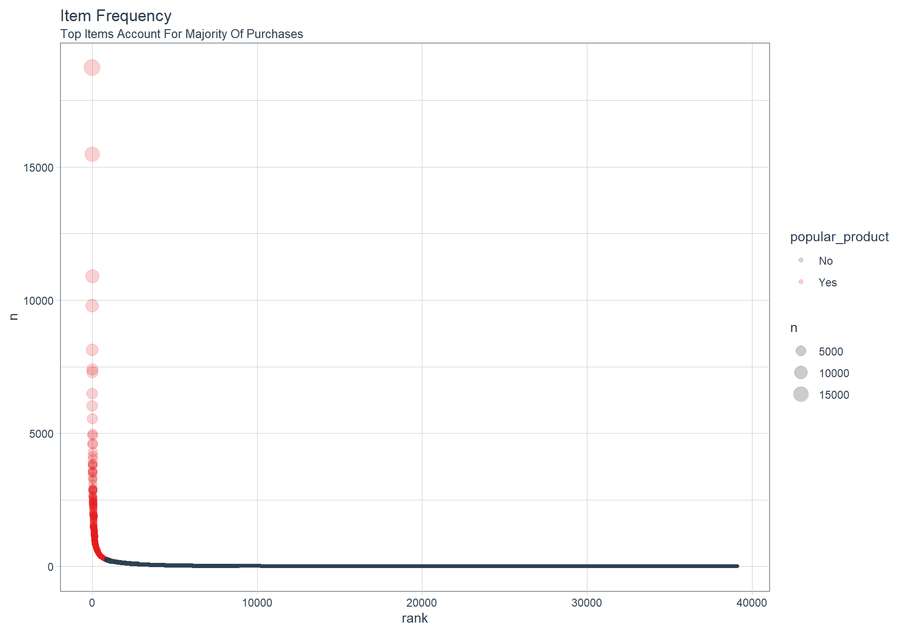
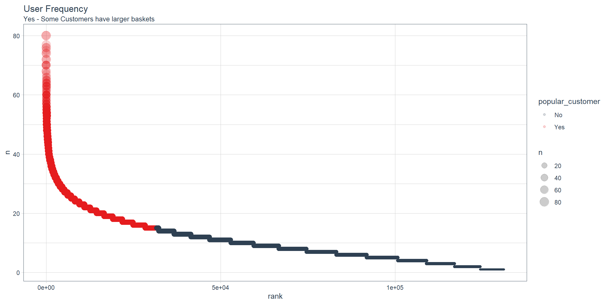
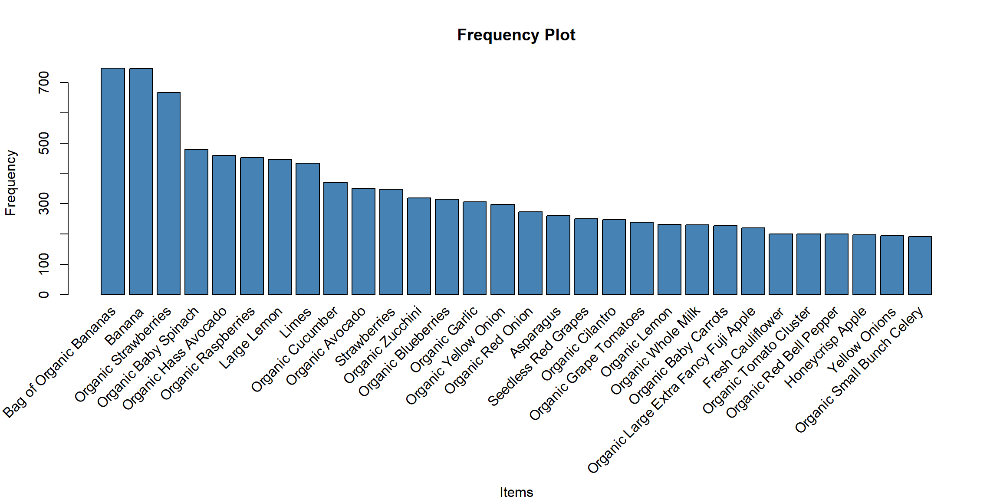
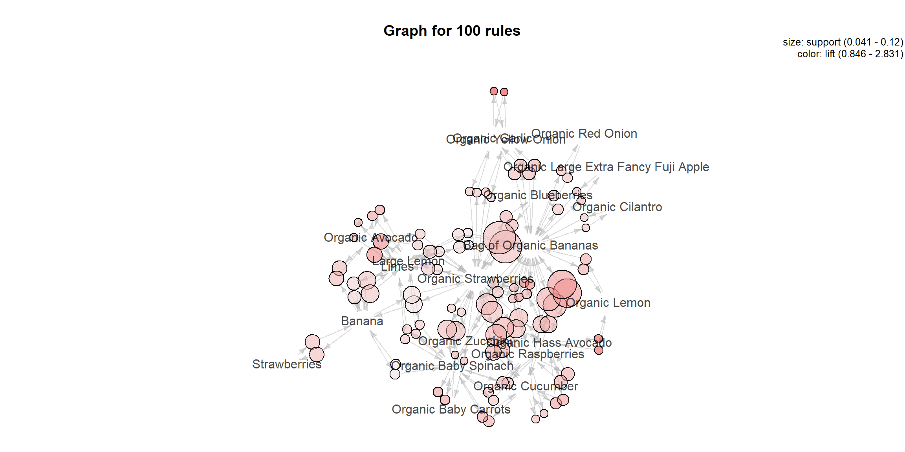
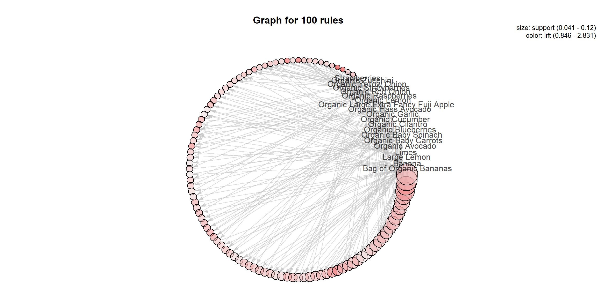

Instacart Market Basket Analysis
Overview
This is a detailed code-through designed to familiarize the Business with:
- Market Basket Analysis
- Recommend products based on customer’s cart.
- Customer Behavior
- Do customers purchase items together frequently?
- Understand what customers buy.
- Recommendations based on their similarity to what customers normally buy.
Market Basket Analysis Strategies
Market Basket Analysis (also called Affinity Analysis) is the process of discovering relationships between individuals and the products that they purchase. It’s an excellent way to better understand customer buying habits (think likelihood of a clothing purchase based on similarity to other customers in retail) and to create product recommendations (think Netflix ratings-based movie recommendations). There are several common methods to perform Market Basket Analysis each with strengths and weaknesses including:
- Collaborative Filtering
- Association Rules
- Item Popularity
- Content-Based Filtering
- Hybrid Models
Click the tabs below to learn more about each method.
Collaborative Filtering
Collaborative Filtering is uses mathematical similarities to determine the likelihood of product purchases. Two strategies are employed: (1) user-based (e.g. customers) or (2) item-based (e.g. products). Both methodologies start with a ratings matrix, which is simply the users (rows) by the items (columns). Similarity is typically performed using Cosine similarity or Jaccard similarity.
User-based collaborative filtering (UBCF) investigates similarities between the users market basket to find other users with similar baskets, then developing probabilities of items based on the highest probability products. Note that this method disregards the item-based similarities.
Item-based collaboartive filtering (IBCF) investigates similarities between items that are frequently purchased together. Note that this method disregards the user-based similarities.
Association Rules
Association Rules: Association Rules are widely used to analyze retail basket or transaction data, and are intended to identify strong rules discovered in transaction data using measures of interestingness, based on the concept of strong rules. [^1] Rules between two items purchased are developed using three metrics: “Support”, “Confidence”, and “Lift”:
- Support is the probability of two items co-occurring. P(Item1 & Item2)
- Confidence is the Support divided by the probability of purchasing the second item. Support / P(Item2)
- Lift is the Confidence divided by the probability of purchasing the first item. Confidence / P(Item1)
When combined, the items most likely to be purchased is that with the highest association Lift. The method is fast and works well by analyzing items most frequently purchased together. One downside is it doesn’t consider the user’s purchase history.
Popular Items
Popular Items: This strategy is simple yet effective. Just sort the items based on purchase frequency (i.e. popularity) to understand global purchasing habits. Recommendations are just the most frequently purchased items that the are not currently being purchased. The downside is this approach may be too simple missing some of the underlying similarities within segments or cohorts of customers. However, the Business Scientist may be able to further categorize popularity (e.g. if customer is in power tools aisle, list most popular power tools).
Content-Based Filtering
Content-Based Filtering evaluates the past history of a purchaser to develop probability of future purchases. This method can be useful in discovering key user preferences such as what he/she tends to purchase at which time of day or day of week. The method requires detailed knowledge of past history. If this is unavailable, a similar user profile (e.g. based on demographic information) can be used in place of detailed history.
Hybrid Models
Hybrid Models are often an “ensemble” of multiple approaches that leverage the strengths of various modeling approaches. A typical ensemble may include both user-based and item-based collaborative filtering to mine both user and item based similarities along with content-based filtering that leverages the history of the customer’s purchases. The resulting model is often better than any one of the models.
Analysis
In this analysis, I developed several models using Collaborative Filtering, Association Rules, and Popularity modeling strategies, which are easily generated and compared using the recommenderlab package.
Libraries
Load the following libraries.
library(tidyverse)
library(vroom)
library(fs)
library(knitr)
library(glue)
library(cowplot)
library(tidyverse)
library(tidyquant)
# Interactive visualization
library(plotly)
# Visualizing association rules and frequent item sets
library(arulesViz)
# Recommender algorithms
library(recommenderlab)
# Evaluate association rules
library(arules)Data
The Instacart dataset is open sourced as discussed in this article by Instacart. In addition, a Kaggle Competition was run in 2016-2017, which further promoted use of the Instacart dataset among the Data Science Community.
The Instacart Dataset contains a number of interesting features that can be further analyzed including departments, aisles, reordering habits, and so on. In this analysis will focus on Market Basket, which is the contents of individual orders (i.e. order_id and product_name).
Here are the element names for the data (tibbles) stored in instacart_raw_list.
Orders
orders <- vroom("data/orders.csv", delim = ",")
orders## # A tibble: 3,421,083 x 7
## order_id user_id eval_set order_number order_dow order_hour_of_d~
## <dbl> <dbl> <chr> <dbl> <dbl> <chr>
## 1 2539329 1 prior 1 2 08
## 2 2398795 1 prior 2 3 07
## 3 473747 1 prior 3 3 12
## 4 2254736 1 prior 4 4 07
## 5 431534 1 prior 5 4 15
## 6 3367565 1 prior 6 2 07
## 7 550135 1 prior 7 1 09
## 8 3108588 1 prior 8 1 14
## 9 2295261 1 prior 9 1 16
## 10 2550362 1 prior 10 4 08
## # ... with 3,421,073 more rows, and 1 more variable:
## # days_since_prior_order <dbl>Orders product
order_products_train <- vroom("data/order_products__train.csv", delim = ",")
order_products_train## # A tibble: 1,384,617 x 4
## order_id product_id add_to_cart_order reordered
## <dbl> <dbl> <dbl> <dbl>
## 1 1 49302 1 1
## 2 1 11109 2 1
## 3 1 10246 3 0
## 4 1 49683 4 0
## 5 1 43633 5 1
## 6 1 13176 6 0
## 7 1 47209 7 0
## 8 1 22035 8 1
## 9 36 39612 1 0
## 10 36 19660 2 1
## # ... with 1,384,607 more rowsProducts
products <- vroom("data/products.csv", delim = ",")
products## # A tibble: 49,688 x 4
## product_id product_name aisle_id department_id
## <dbl> <chr> <dbl> <dbl>
## 1 1 Chocolate Sandwich Cookies 61 19
## 2 2 All-Seasons Salt 104 13
## 3 3 Robust Golden Unsweetened Oolong Tea 94 7
## 4 4 Smart Ones Classic Favorites Mini Rigatoni~ 38 1
## 5 5 Green Chile Anytime Sauce 5 13
## 6 6 Dry Nose Oil 11 11
## 7 7 Pure Coconut Water With Orange 98 7
## 8 8 Cut Russet Potatoes Steam N' Mash 116 1
## 9 9 Light Strawberry Blueberry Yogurt 120 16
## 10 10 Sparkling Orange Juice & Prickly Pear Beve~ 115 7
## # ... with 49,678 more rowsAisles
aisles <- vroom("data/aisles.csv", delim = ",")
aisles## # A tibble: 134 x 2
## aisle_id aisle
## <dbl> <chr>
## 1 1 prepared soups salads
## 2 2 specialty cheeses
## 3 3 energy granola bars
## 4 4 instant foods
## 5 5 marinades meat preparation
## 6 6 other
## 7 7 packaged meat
## 8 8 bakery desserts
## 9 9 pasta sauce
## 10 10 kitchen supplies
## # ... with 124 more rowsDepartments
departments <- vroom("data/departments.csv", delim = ",")
departments## # A tibble: 21 x 2
## department_id department
## <dbl> <chr>
## 1 1 frozen
## 2 2 other
## 3 3 bakery
## 4 4 produce
## 5 5 alcohol
## 6 6 international
## 7 7 beverages
## 8 8 pets
## 9 9 dry goods pasta
## 10 10 bulk
## # ... with 11 more rowsCombining market basket from "order_products__prior" and the "products" data. We can see that it’s 32.4M rows, which is a lot of data to deal with. Creating a recommender with this size data set would be a lot to handle.
CRISP-DM / BSPF Data Science Process
We’ll follow the combined BSPF / CRISP-DM data science framework. For brevity, we won’t go into a full BSPF analysis (this is not practical for a code through).

1. Business Understanding
The business problem is that we can potentially derive more sales from our customers by recommending products they are likely to want. Often the customer goes to the store or visits the website for a specific reason, but for the organization this is a prime opportunity to increase sales by recommending products the customer may not be thinking about. These could be:
Products similar people purchased (think Bill and Jeff both enjoy World of Warcraft so they might like the same computer gaming setup)
Products that were purchased with similar items (think portable chargers for an Amazon Alexa)
Products that were purchased in the recent past (think baby diapers, which, as a new father, I (Matt) am finding that babies go through FAST)
2. Data Understanding
One of the easiest ways to understand a market basket is by looking at how frequently items are purchased. We can use the count() function along with some calculations to understand which items are popular:
- Percentage of total
"pct" - Cumulative percentage of total
"cumulative_pct - Popular product which we define somewhat arbitrarily as less than or equal to
50%cumulative percent
orders_combined_tbl <- order_products_train %>%
left_join(orders) %>%
left_join(products) %>%
left_join(aisles) %>%
left_join(departments) %>%
select(eval_set, user_id,
contains("order"), contains("product"),
contains("aisle"), contains("department"), everything())
item_frequency_tbl <- orders_combined_tbl %>%
count(product_name, product_id, aisle, department) %>%
arrange(desc(n)) %>%
mutate(
pct = n / sum(n),
cumulative_pct = cumsum(pct),
popular_product = ifelse(cumulative_pct <= 0.5, "Yes", "No")
) %>%
rowid_to_column(var = "rank") %>%
mutate(label_text = str_glue("Rank: {rank}
Product: {product_name}
ProductID: {product_id}
Aisle: {aisle}
Department: {department}
Count: {n}
Pct: {scales::percent(pct)}
Cumulative Pct: {scales::percent(cumulative_pct)}"))
item_frequency_tbl %>% select(product_name,n,pct,cumulative_pct, popular_product)## # A tibble: 39,123 x 5
## product_name n pct cumulative_pct popular_product
## <chr> <int> <dbl> <dbl> <chr>
## 1 Banana 18726 0.0135 0.0135 Yes
## 2 Bag of Organic Bananas 15480 0.0112 0.0247 Yes
## 3 Organic Strawberries 10894 0.00787 0.0326 Yes
## 4 Organic Baby Spinach 9784 0.00707 0.0396 Yes
## 5 Large Lemon 8135 0.00588 0.0455 Yes
## 6 Organic Avocado 7409 0.00535 0.0509 Yes
## 7 Organic Hass Avocado 7293 0.00527 0.0561 Yes
## 8 Strawberries 6494 0.00469 0.0608 Yes
## 9 Limes 6033 0.00436 0.0652 Yes
## 10 Organic Raspberries 5546 0.00401 0.0692 Yes
## # ... with 39,113 more rowsWhich products are purchased most frequently?
We can see a few things from this table:
- The top item (1.35% of purchases) is Bananas
- There are almost 40K items, which is a lot to handle via a ratings matrix.
Let’s visualize to see what we are dealing with. We’ll use ggplot2 to help some of the interesting aspects of the market basket stand out.
- We’ll set the
size = n, which increases the size of the point based on how frequently it is purchased. - We’ll set the
color = popular_product, which separates items in the top 50% of purchase frequency from items in the bottom 50%.
item_frequency_tbl %>%
rowid_to_column() %>%
ggplot(aes(rank, n)) +
geom_point(aes(size = n, color = popular_product), alpha = 0.2) +
theme_tq() +
scale_color_tq() +
theme(legend.direction = "vertical",
legend.position = "right") +
labs(title = "Item Frequency",
subtitle = "Top Items Account For Majority Of Purchases")
From the visualization, we immediately see that the data is highly skewed. The top 50% of purchases, sum(n), are derived from only 852 of the almost 40,000 items. This is less than 2.2% of the total products (items).
item_frequency_tbl %>%
count(popular_product) %>%
mutate(pct = n / sum(n))## # A tibble: 2 x 3
## popular_product n pct
## <chr> <int> <dbl>
## 1 No 38271 0.978
## 2 Yes 852 0.0218Do Customers Purchase More Frequently
user_frequency_tbl <- orders_combined_tbl %>%
distinct(user_id, order_id) %>%
count(user_id) %>%
arrange(desc(n)) %>%
mutate(
pct = n / sum(n),
cumulative_pct = cumsum(pct),
popular_customer = ifelse(cumulative_pct <= 0.5, "Yes", "No")
) %>%
rowid_to_column(var = "rank")
user_frequency_tbl## # A tibble: 131,209 x 6
## rank user_id n pct cumulative_pct popular_customer
## <int> <dbl> <int> <dbl> <dbl> <chr>
## 1 1 1 1 0.00000762 0.00000762 Yes
## 2 2 2 1 0.00000762 0.0000152 Yes
## 3 3 5 1 0.00000762 0.0000229 Yes
## 4 4 7 1 0.00000762 0.0000305 Yes
## 5 5 8 1 0.00000762 0.0000381 Yes
## 6 6 9 1 0.00000762 0.0000457 Yes
## 7 7 10 1 0.00000762 0.0000533 Yes
## 8 8 13 1 0.00000762 0.0000610 Yes
## 9 9 14 1 0.00000762 0.0000686 Yes
## 10 10 17 1 0.00000762 0.0000762 Yes
## # ... with 131,199 more rowsDo Certain Customers Buy More Products?
Table
n: Counting how many products are in their basket.
Looks like the first customer has 80 products.
user_item_frequency_tbl <- orders_combined_tbl %>%
count(user_id) %>%
arrange(desc(n)) %>%
mutate(
pct = n / sum(n),
cumulative_pct = cumsum(pct),
popular_customer = ifelse(cumulative_pct <= 0.5, "Yes", "No")
) %>%
rowid_to_column(var = "rank")
user_item_frequency_tbl## # A tibble: 131,209 x 6
## rank user_id n pct cumulative_pct popular_customer
## <int> <dbl> <int> <dbl> <dbl> <chr>
## 1 1 149753 80 0.0000578 0.0000578 Yes
## 2 2 197541 80 0.0000578 0.000116 Yes
## 3 3 63458 77 0.0000556 0.000171 Yes
## 4 4 83993 76 0.0000549 0.000226 Yes
## 5 5 189951 76 0.0000549 0.000281 Yes
## 6 6 169647 75 0.0000542 0.000335 Yes
## 7 7 31611 74 0.0000534 0.000389 Yes
## 8 8 104741 74 0.0000534 0.000442 Yes
## 9 9 59321 72 0.0000520 0.000494 Yes
## 10 10 181991 72 0.0000520 0.000546 Yes
## # ... with 131,199 more rowsPlot
user_item_frequency_tbl %>%
ggplot(aes(rank, n)) +
geom_point(aes(size = n, color = popular_customer), alpha = 0.2) +
theme_tq() +
scale_color_tq() +
theme(legend.direction = "vertical",
legend.position = "right") +
labs(title = "User Frequency",
subtitle = "Yes - Some Customers have larger baskets")
3. Data Preparation
We’ll need to create a ratings matrix, which has the purchase history formatted in a 2x2 matrix with rows being orders and columns being products. This format is often called a user-item matrix because users (e.g. customers or orders) tend to be on the rows and items (e.g. products) in the columns.
The ratings matrix can be extraordinarily sparse given we have 32M+ data points with 40K products. Further, many of these data points are not meaningful. We saw that the data is highly skewed, which indicates that the lowest frequency items can likely be discarded because these are by definition “unpopular”. We can plan our data preparation by:
Taking advantage of item popularity. A small proportion of the products are driving a large proportion of the purchase frequencies. By limiting to the top items, we can reduce the width of the ratings matrix making it much easier to handle without losing much.
Further reduce the height of the matrix through sampling. We can sample 20,000 orders to make the ratings matrix more manageable. Further, we can limit the market baskets to those with at least 3 popular items, which ensures similarities between multiple items.
First, let’s filter to only the products that are popular, meaning the top products that drive 50% of the purchases.
Popular Products
# Get names of top products
top_products_vec <- item_frequency_tbl %>%
filter(popular_product == "Yes") %>%
pull(product_name)
# Use names to filter
top_products_basket_tbl <- orders_combined_tbl %>%
filter(product_name %in% top_products_vec)
top_products_basket_tbl %>% select(order_id, product_name)## # A tibble: 692,147 x 2
## order_id product_name
## <dbl> <chr>
## 1 1 Organic Celery Hearts
## 2 1 Cucumber Kirby
## 3 1 Bag of Organic Bananas
## 4 1 Organic Hass Avocado
## 5 1 Organic Whole String Cheese
## 6 36 Spring Water
## 7 36 Organic Half & Half
## 8 36 Super Greens Salad
## 9 36 Organic Garnet Sweet Potato (Yam)
## 10 36 Asparagus
## # ... with 692,137 more rowsLarge baskets
Users have the largest baskets
# Condense user-item / Transaction-Item Matrix for Evaluation
top_users_vec <- user_item_frequency_tbl %>%
# Filter the rank less than 2500
filter(rank < 2500) %>%
pull(user_id)
market_basket_condensed_tbl <- top_products_basket_tbl %>%
filter(user_id %in% top_users_vec)
market_basket_condensed_tbl ## # A tibble: 44,476 x 15
## eval_set user_id order_id add_to_cart_ord~ reordered order_number order_dow
## <chr> <dbl> <dbl> <dbl> <dbl> <dbl> <dbl>
## 1 train 56463 98 1 1 41 3
## 2 train 56463 98 4 1 41 3
## 3 train 56463 98 8 1 41 3
## 4 train 56463 98 13 1 41 3
## 5 train 56463 98 15 1 41 3
## 6 train 56463 98 16 1 41 3
## 7 train 56463 98 20 1 41 3
## 8 train 56463 98 21 1 41 3
## 9 train 56463 98 22 1 41 3
## 10 train 56463 98 25 1 41 3
## # ... with 44,466 more rows, and 8 more variables: order_hour_of_day <chr>,
## # days_since_prior_order <dbl>, product_id <dbl>, product_name <chr>,
## # aisle_id <dbl>, aisle <chr>, department_id <dbl>, department <chr>Next, let’s sample 20,000 orders and then filter to those with baskets of at least 3 popular items. Note that it could take a while to filter first due to the aggregation step. The downside is that we end up with less than 20,000 total samples. If desired, we could increase the sample size further.
n_sample <- 20000
min_items <- 3
set.seed(100)
sample_order_ids <- sample(unique(top_products_basket_tbl$order_id), size = n_sample)
top_products_sample_tbl <- top_products_basket_tbl %>%
select(order_id, product_name) %>%
# Sample orders
filter(order_id %in% sample_order_ids) %>%
# Filter using min_items
group_by(order_id) %>%
filter(n() >= min_items) %>%
ungroup()
top_products_sample_tbl ## # A tibble: 108,681 x 2
## order_id product_name
## <dbl> <chr>
## 1 96 Roasted Turkey
## 2 96 Organic Cucumber
## 3 96 Organic Grape Tomatoes
## 4 96 Organic Raspberries
## 5 96 Organic Whole Strawberries
## 6 96 Organic Blueberries
## 7 349 Pure Irish Butter
## 8 349 Natural Chicken & Sage Breakfast Sausage
## 9 349 Uncured Hickory Smoked Sunday Bacon
## 10 349 Large Alfresco Eggs
## # ... with 108,671 more rows4. Market Basket Analysis
convert the sampled market baskets to a ratings matrix in the format that recommenderlab uses. The type of ratings matrix is a “binary rating matrix”, which consists of 0’s and 1’s indicating whether or not a product was purchased.
Data format(Binary Ratings Matrix)
user_item_tbl <- market_basket_condensed_tbl %>%
select(user_id, product_name) %>%
mutate(value = 1) %>%
spread(product_name, value, fill = 0)
user_item_rlab <- user_item_tbl %>%
select(-user_id) %>%
as.matrix() %>%
# Convert to binaryRatingsMatrix class used by recommenderlab
as("binaryRatingMatrix")
user_item_rlab## 2498 x 846 rating matrix of class 'binaryRatingMatrix' with 44476 ratings.# Relationship with association rules
user_item_rlab@data %>% summary()## itemMatrix in sparse format with
## 2498 rows (elements/itemsets/transactions) and
## 846 columns (items) and a density of 0.02104568
##
## most frequent items:
## Bag of Organic Bananas Banana Organic Strawberries
## 747 746 667
## Organic Baby Spinach Organic Hass Avocado (Other)
## 479 459 41378
##
## element (itemset/transaction) length distribution:
## sizes
## 1 2 3 4 5 6 7 8 9 10 11 12 13 14 15 16 17 18 19 20
## 3 9 22 34 40 38 57 73 90 78 91 103 104 120 130 118 115 109 112 118
## 21 22 23 24 25 26 27 28 29 30 31 32 33 34 35 36 37 38 39 40
## 126 112 109 106 108 96 61 45 36 37 22 16 12 12 17 5 6 2 1 2
## 43 44 45
## 1 1 1
##
## Min. 1st Qu. Median Mean 3rd Qu. Max.
## 1.0 12.0 18.0 17.8 23.0 45.0
##
## includes extended item information - examples:
## labels
## 1 0% Greek Strained Yogurt
## 2 1% Low Fat Milk
## 3 1% Lowfat MilkUser-Items frequency
# Items frequency
itemFrequencyPlot(user_item_rlab@data, topN=30, type="absolute",
xlab = "Items", ylab = "Frequency",
col = "steelblue",
main = "Frequency Plot")
As a side note, a second type of ratings matrix, a “real rating matrix” consisting of actual user ratings (e.g. Netflix movie ratings on a 1 to 5 scale), is permitted. This format must be normalized, which can be done using the normalize() function. Because we are working with binary data, no normalization is necessary.
Association rules
Used to Identify Rules 1. Support - Probability of co-occurrence - P(Item 1 & Item 2) 2. Confidence Support / P(Item 2) 3. Lift Confidence / P(Item 1)
# Association Rules
model_ar <- recommenderlab::Recommender(
data = user_item_rlab,
method = "AR",
param = list(supp = 0.01, conf = 0.10))
# Extract rule base
rules <- model_ar@model$rule_baseRule base graph
sort(rules, by = "lift", decreasing = TRUE)[1:20] %>% inspect() ## lhs rhs support confidence coverage lift count
## [1] {Sparkling Lemon Water} => {Lime Sparkling Water} 0.01000801 0.3048780 0.03282626 7.184768 25
## [2] {Lime Sparkling Water} => {Sparkling Lemon Water} 0.01000801 0.2358491 0.04243395 7.184768 25
## [3] {Orange Bell Pepper} => {Yellow Bell Pepper} 0.01080865 0.1875000 0.05764612 6.004808 27
## [4] {Yellow Bell Pepper} => {Orange Bell Pepper} 0.01080865 0.3461538 0.03122498 6.004808 27
## [5] {Organic Red Bell Pepper} => {Organic Bell Pepper} 0.01321057 0.1650000 0.08006405 4.480109 33
## [6] {Organic Bell Pepper} => {Organic Red Bell Pepper} 0.01321057 0.3586957 0.03682946 4.480109 33
## [7] {Lime Sparkling Water} => {Sparkling Water Grapefruit} 0.01040833 0.2452830 0.04243395 4.254979 26
## [8] {Sparkling Water Grapefruit} => {Lime Sparkling Water} 0.01040833 0.1805556 0.05764612 4.254979 26
## [9] {Organic Lemon,
## Organic Yellow Onion} => {Organic Garlic} 0.01200961 0.5084746 0.02361890 4.150881 30
## [10] {Limes,
## Organic Garlic} => {Organic Cilantro} 0.01361089 0.4096386 0.03322658 4.142822 34
## [11] {Organic Garlic,
## Organic Red Bell Pepper} => {Organic Yellow Onion} 0.01000801 0.4901961 0.02041633 4.122929 25
## [12] {Organic Cilantro,
## Organic Yellow Onion} => {Organic Garlic} 0.01120897 0.4912281 0.02281825 4.010091 28
## [13] {Organic Garlic,
## Organic Hass Avocado} => {Organic Lemon} 0.01321057 0.3707865 0.03562850 3.992348 33
## [14] {Organic Hass Avocado,
## Organic Red Bell Pepper} => {Organic Yellow Onion} 0.01080865 0.4736842 0.02281825 3.984051 27
## [15] {Organic Garlic,
## Organic Raspberries} => {Organic Lemon} 0.01240993 0.3690476 0.03362690 3.973625 31
## [16] {Bunched Cilantro,
## Large Lemon} => {Limes} 0.01160929 0.6744186 0.01721377 3.881792 29
## [17] {Large Lemon,
## Limes} => {Bunched Cilantro} 0.01160929 0.1768293 0.06565252 3.874733 29
## [18] {Organic Garlic,
## Organic Lemon} => {Organic Yellow Onion} 0.01200961 0.4477612 0.02682146 3.766018 30
## [19] {Bag of Organic Bananas,
## Organic Garlic} => {Organic Yellow Onion} 0.02522018 0.4405594 0.05724580 3.705446 63
## [20] {Bag of Organic Bananas,
## Organic Carrot Bunch} => {Organic Lemon} 0.01000801 0.3424658 0.02922338 3.687411 25plot(rules, method = "graph")
plot(model_ar@model$rule_base, method = "graph",
control=list(layout=igraph::in_circle()))
Product recommender
Scatterplot for Product recommender with lift confidence.
plotly_arules(rules, method = "scatterplot",
marker = list(opacity = .7, size = ~lift),
colors = c("blue", "green"))User-based collaborative filtering
User-based collaborative filtering examines user similarity
model_ucbf <- recommenderlab::Recommender(
data = user_item_rlab,
method = "UBCF",
param = list(method = "Cosine", nn = 500))